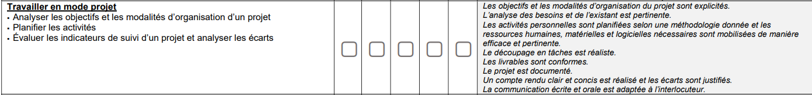
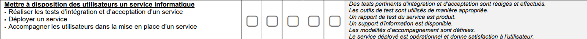

Recenser et identifier les ressources numériques (GLPI fusion inventory, Compte rendu page 3 à 11) :
Exploiter des référentiels, normes et standards adoptées par le prestataires informatique (Plan d'addressage IP et fichiers de configuration) :
Mettre en place et vérifier les niveaux d'habilitation associèes à un service (wiki droit utilisateurs, Compte rendu wiki page 33 à 40) :
Vérifier les conditions de la continuité d'un service informatique (Agent zabbix et snmp, Compte rendu zabbix page 46 à 54), (API meraki, Rapport de Stage Eurotunnel 2eme année page 10 à 15), et (DHCP redondant, Compte rendu DHCP redondant) :
Vérifier le respect des règles d'utilisation des ressources numériques (wiki droit utilisateurs, Compte rendu wiki page 33 à 40) :
Collecter, suivre et orienter des demandes (GLPI ticketing, Compte rendu page 12 à 29) :
Traiter des demandes concernant les services réseau et système, applicatifs (GLPI ticketing, Compte rendu page 12 à 29) :
Traiter des demandes concernant les applications (GLPI ticketing, Compte rendu page 12 à 29) :
Participer à la valorisation de l'image de l'organisation sur les médias numériques en tenant compte du cadre juridique et des enjeux économiques, référencer les services en ligne de l'organisation et mesurer leur visibilité, participer à l'évolution d'un site web exploitant les données de l'organisation. :
Travailler en mode projet :

Analyser les objectifs et les modalités d'organisation d'un projet, Planifier les activités, Evaluer les indicateurs de suivi d'un projet et analyser les écarts :
Mettre à disposition des utilisateurs un service informatique :

Réaliser les tests d'intégration et d'acceptation d'un service (DHCP redondant, Compte rendu DHCP redondant page 6 à 13) :
Déployer un service (DHCP redondant, Compte rendu DHCP redondant) et (zabbix agent, Compte rendu zabbix page 46 à 53) :
Accompagner les utilisateurs dans la mise en place d'un service (Schéma d'une application On-premise, Rapport de Stage Eurotunnel 1ère année page 20 et 21) :
Mettre en place son environnement d'apprentissage personnel (Certification pix, SecNum) :
Mettre en oeuvre des outils et stratégies de veille informationnelle (Veille informationnelle) :
Gérer son identité professionnelle : Profil linkedin et mon CV
Développer son projet professionnel : Aujourd'hui, je projette de continuer mes études dans le secteur de l'informatique afin de devenir Administrateur Réseau. Je souhaiterai me spécialiser dans les systèmes & réseaux. C'est pour cela que j'ai prévu, à la suite de mon BTS SIO, de suivre un bachelor Administrateur d'infrastructures sécurisées en alternance à Gaston Berger à Lille. Je connais la valeur des connaissances d'une équipe de techniciens expérimentés, et je pense que le meilleur moyen d'apprendre est sur le terrain, en conditions de travail, sans toutefois négliger la théorie.